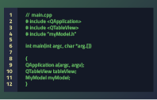

Developers

Design your application so that it can be adapted to various languages and regions without engineering changes.
For more information, see also:
You can use Qt Creator wizard templates to create Qt widget-based projects with translation support. For more information, see Qt Creator: Creating Projects.
The following video shows how to internationalize and localize a simple example application: